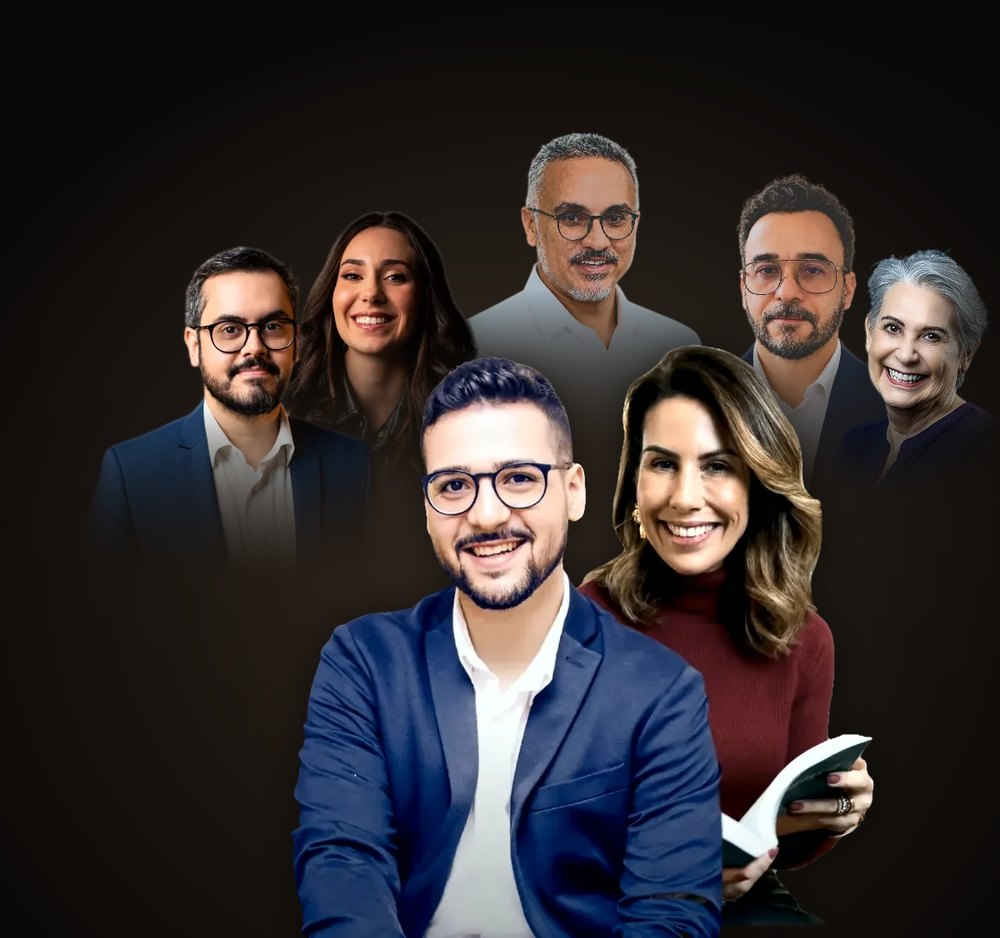
Manual do
Embaixador
Tudo o que você precisa para atender os leads do Congresso Plenitude 2026 e da Pós em Terapia da Plenitude, Turma 02.
Como usar este manual
Você é a pessoa que o lead encontra do outro lado da conversa. Este manual dá a você o que dizer e onde fazer.
- Parte 1 · O Congresso. O que é, por que existe, a programação, os preletores, o ingresso, a Pós e as respostas para as dúvidas dos leads.
- Parte 2 · O CRM. Como usar o GoHighLevel, o pipeline, as tags e o passo a passo de cada tipo de atendimento, com as mensagens prontas.
Seu papel em 3 tarefas
- Receber quem comprou o Congresso. Dar boas-vindas, levar ao grupo de inscritos e conhecer o perfil da pessoa.
- Recuperar quem tentou comprar e não concluiu. Tirar a dúvida e ajudar a terminar o pagamento.
- Acompanhar quem se interessa pela Pós. Responder às dúvidas e levar até a matrícula na Turma 02.
- Parte 1 · O Congresso
- O Congresso em resumo04
- Por que o Congresso existe05
- A Quarta Onda e para quem é06
- A programação do dia07
- Quem conduz08
- Os preletores09
- Ingresso, pagamento e acesso11
- A Pós · Turma 0212
- Dúvidas frequentes · Congresso14
- Dúvidas frequentes · Pós15
- Como falar com o lead16
- Parte 2 · O CRM
- Como o lead chega até você18
- Primeiro acesso e menu19
- O pipeline de leads20
- Ficha do contato e tags21
- Conversas: como responder22
- Atendimento 1 · Comprou o Congresso23
- Atendimento 2 · Não concluiu a compra24
- Atendimento 3 · Pós25
- Respostas para as objeções da Pós26
- O dia 28/11 para o Embaixador27
- Dúvidas sobre o CRM e checklist28
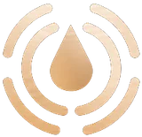
O Congresso
O que é, por que existe, quem fala, quanto custa e o que responder para cada dúvida do lead.
Um dia, cinco mesas,
gerações unidas à mesa.
O Congresso Plenitude 2026 é um encontro online e ao vivo para quem cuida de gente: terapeutas, conselheiros, pastores, líderes e estudantes. O tema é a união de gerações no resgate dos fundamentos perdidos do cuidado integral do ser humano: corpo, mente e espírito. A Academia da Plenitude realiza o Congresso. O João Victor Fonseca conduz.
"Faça parte daqueles que irão resgatar os fundamentos perdidos do cuidado integral do Ser: corpo, mente e espírito."
"O Congresso Plenitude é um dia online, no sábado 28/11, para quem cuida de gente: terapeutas, pastores, conselheiros e líderes. São cinco mesas com nomes como a Dra. Esly Carvalho e o psiquiatra Ismael Sobrinho, sobre como unir de novo a técnica e a fé no cuidado da alma. O ingresso custa R$ 97 à vista ou 12x de R$ 10,03, é ao vivo pelo Zoom, e a gravação fica disponível por 12 meses."
Por que o Congresso existe:
o cuidado da alma foi partido ao meio.
Por séculos, cuidar da alma era uma coisa só. Quem cuidava sabia quem o ser humano era, de onde vinha a dor e para que servia a vida. No século passado, esse cuidado foi partido ao meio. A igreja ficou com a alma e perdeu a técnica. A ciência psicológica ficou com a técnica e perdeu a alma. Nenhum dos dois lados escolheu isso. Os dois herdaram.
Tem o fundamento.
Não tem o método.
Recebe a pessoa adoecida no gabinete. Cuida no escuro, por intuição e oração, com medo de errar.
Tem o método.
Não tem o fundamento.
Atende o paciente cristão. Trata o sintoma, o paciente melhora e continua vazio.
Dos dois lados, a consequência é a mesma:
gente cuidando de gente com metade das ferramentas.
Não estamos inventando um novo fundamento. Estamos resgatando os fundamentos perdidos no cuidado integral das pessoas.
Para isso, o Congresso une o cuidado pastoral, espiritual e teológico ao tratamento técnico, científico e terapêutico. A Terapia da Plenitude não é uma terceira coisa no meio dos dois lados: ela devolve a cada um a metade que o outro guardou.
A Quarta Onda
Na história da ciência psicológica, cada onda olhou para uma parte do ser humano. A Terapia da Plenitude se apresenta como a quarta.
A base da Quarta Onda são os fundamentos teológicos, antropológicos e filosóficos cristãos, unidos aos fundamentos mais atuais da ciência psicológica: Terapia do Esquema, Logoterapia, Neurociência e Terapias de Terceira Onda. Não é aconselhamento bíblico com vocabulário técnico, nem ciência psicológica com um devocional no fim. É o cuidado da alma inteiro de novo.
Um encontro para quem cuida de gente.
O Congresso é para quem
- É terapeuta cristão e não quer mais deixar metade do paciente do lado de fora do consultório.
- É terapeuta e quer lastro para tratar o ser humano por completo.
- É pastor ou líder, recebe gente que a oração sozinha não tem alcançado e quer cuidar com método.
- É conselheiro e quer entender o que está vendo quando alguém senta na sua frente.
- Cuida de pessoas e sente que, há muito tempo, ninguém cuida de si.
Não é para quem
- Quer espiritualizar o sofrimento sem critério clínico.
- Procura conteúdo religioso sem base científica.
- Busca técnicas soltas e respostas simples para casos difíceis.
- Espera sair habilitado a fazer psicoterapia sem ser graduado em Psicologia.
As duas famílias de público
Vocacionado. Pastor, líder, conselheiro, quem cuida de pessoas na igreja ou no ministério. Tem o fundamento. Procura o método.
Profissional. Terapeuta, graduado ou estudante de Psicologia. Tem o método. Procura o fundamento.
Descubra em qual família o lead está logo na primeira conversa. A resposta muda as mesas que você indica e o caminho na Pós.
A programação
Sábado, 28 de novembro · 100% online, pelo Zoom · horário de Brasília.
A união de gerações no resgate dos fundamentos perdidos
Fé e Constituição
Liberdade religiosa e o exercício profissional dos cristãos na saúde mental.
O Resgate do Ser
Os fundamentos da Logoterapia, da Psicologia Tomista e da Antropologia Paulina na compreensão do ser humano integral.
Cristãos e o adoecimento mental
Tratamento integral em saúde mental para cristãos.
Aconselhamento Bíblico e Saúde Mental
A integração entre os fundamentos teológicos e a psicologia no cuidado da alma.
Trauma Emocional e a Graça
O processo de cura e renovação da mente no processo terapêutico com cristãos.
Terapia da Plenitude: a resposta para o cuidado integral do Ser
Lançamento da Academia da Plenitude e da Turma 02 da Pós em Terapia da Plenitude, com condição exclusiva para quem está no Congresso.
Que mesas indicar para cada perfil
Vocacionado: Mesas 1, 3 e 4.
Profissional: Mesas 2, 3 e 5.
Os dois: abertura e encerramento.
Quem está à frente deste encontro
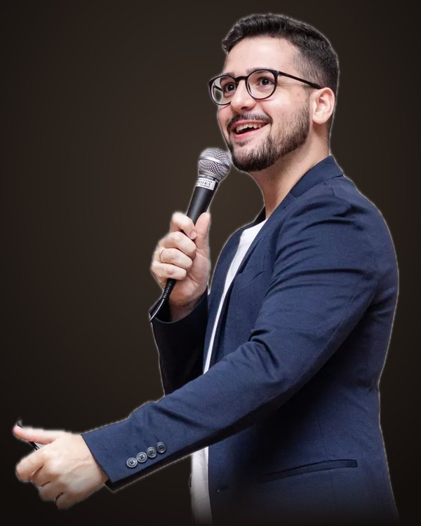
João Victor Fonseca
Terapeuta · criador da Terapia da Plenitude
- Formação: especialista em Terapia Cognitivo-Comportamental e Neurociência do Comportamento, com formação em Terapia do Esquema.
- Criação: Terapia da Plenitude e o protocolo Pleromaterapia.
- Ensino: coordenador da pós-graduação em Terapia da Plenitude.
- Fundação: Academia da Plenitude.
Renata Moreira
Terapeuta · graduada em Psicologia pela PUC Minas
Mais de 20 anos de clínica com adultos, casais e famílias. Especialista em Terapia do Esquema. Fundadora da Escola de Ester e do movimento Mães ao Alto.
A Academia da Plenitude
Escola cristã de formação em saúde mental. Forma quem cuida de gente (terapeutas, conselheiros, pastores e líderes) com rigor científico, profundidade teológica e uma visão declarada de quem o ser humano é. A Academia nasce oficialmente no encerramento do Congresso.
Os preletores
A mesa deste ano reúne gerações: nomes que abriram o caminho no cuidado cristão, ao lado de quem está chegando agora. Os cartões estão na ordem das mesas.
Rafael Durand
@rafaeldurandcAdvogado e mestre em Direito. Atua com Direito Religioso, Eleitoral e Digital. Fala sobre liberdade religiosa e o exercício profissional dos cristãos na saúde mental.
Rafael de Abreu
@psi.rafaeldeabreuPresidente e cofundador do Instituto de Psicologia Tomista. Referência nacional em psicologia tomista e professor da Pós em Terapia da Plenitude.
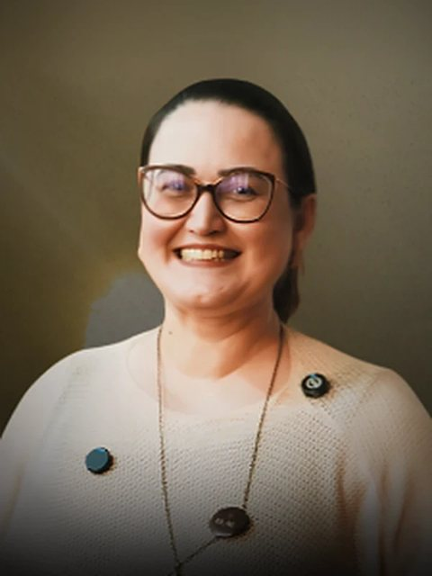
Milena Castro
@milenacastro.psiAtua com Logoterapia e Análise Existencial, a abordagem que coloca o sentido da vida no centro do cuidado. Faz formação e supervisão em Logoterapia.
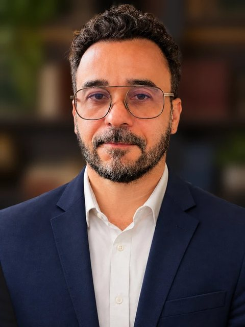
Ismael Sobrinho
@ismael.sobrinhoPsiquiatra (RQE 17867) e escritor de 6 livros. Traz a visão médica do tratamento integral em saúde mental para cristãos.
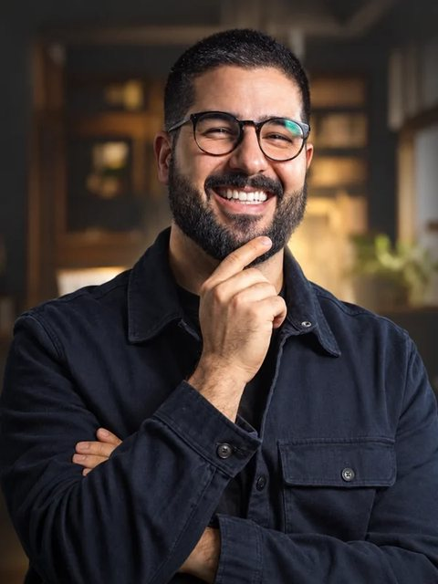
Leandro Carone
@oleandrocaroneFundador da Cedro Clínica, com trabalho dedicado ao cuidado de homens.
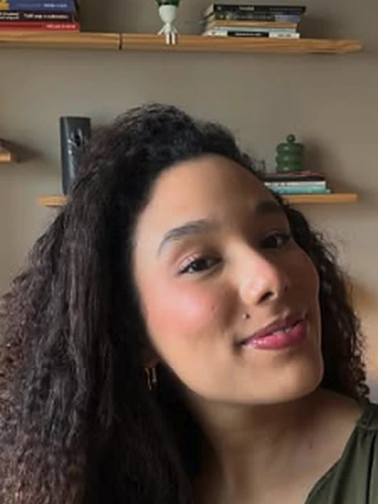
Isabella Ferreira
@bellarferreiraGraduada em Psicologia e criadora de conteúdo. Representa a geração que está chegando agora ao cuidado cristão.
Os preletores · tarde
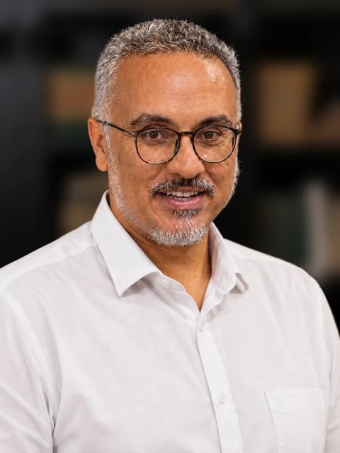
Aender Borba
@aenderborbaFormação em Psicologia e Teologia. Capelão do Seminário Martin Bucer.
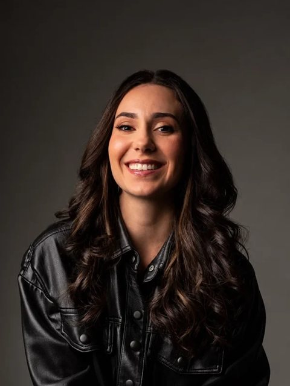
Kauane Leite
@kauanelleiteAtua na integração entre Psicologia, Aconselhamento e Teologia, com foco em saúde mental e fé cristã. Esteve no Congresso 2025: a aula dela é um dos bônus do ingresso.
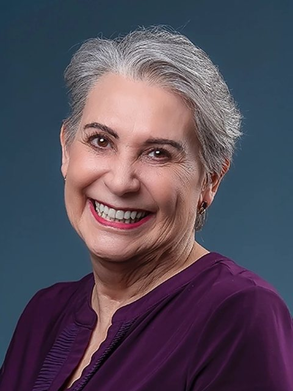
Dra. Esly Carvalho
@doutoraeslycarvalhoFundadora da TraumaClinic. Formadora de profissionais (trainer) em EMDR, Brainspotting e Psicodrama, abordagens usadas no tratamento do trauma.
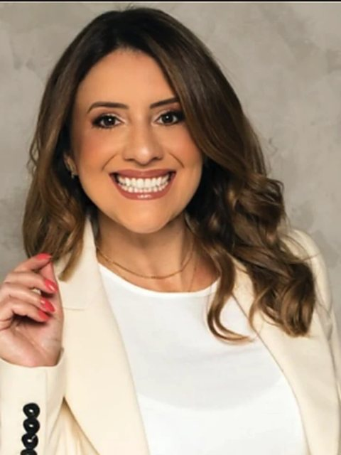
Mary Pinheiro
@marypinheiro.brAtua em saúde mental. a confirmar
A Renata Moreira também está na Mesa 5. O perfil dela está na página 08.
Duas aulas do Congresso 2025
Kauane Leite
Saúde mental e fé cristã. Psicologia, aconselhamento e teologia no cuidado de quem sofre.
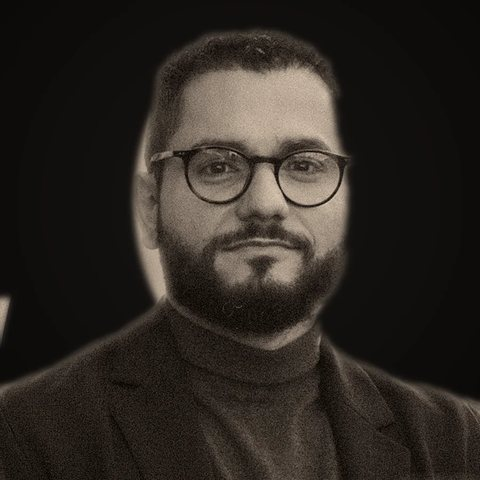
Pr. Yago Martins
Teologia, cosmovisão e integracionismo. Como o terapeuta pode pensar teologicamente o próprio trabalho.
O comprador recebe o link das aulas pelo WhatsApp, depois de entrar no grupo de inscritos. A automação envia o link sozinha. O link das aulas não aparece em nenhuma página pública: não envie o link das aulas para quem não comprou.
Ingresso, pagamento e acesso
em até 12x de
ou R$ 97,00 à vista
- Acesso às cinco mesas ao vivo, da abertura ao encerramento
- Gravação disponível por 12 meses
- Perguntas ao vivo durante as mesas
- Duas aulas bônus do Congresso 2025
- Condição exclusiva para a Turma 02 da Pós
Garantia incondicional de 7 dias.
Formas de pagamento (Kiwify)
| Cartão | Até 12x. Aprovação na hora. |
| Pix | Aprovação em poucos minutos. Recomende para quem teve o cartão recusado. |
| Boleto | Compensa em até 3 dias úteis. A partir de 25/11, indique Pix ou cartão. |
Links oficiais
| Página | congressoplenitude.eleveseplus.com.br |
| Checkout | pay.kiwify.com.br/FMAqNH5 |
| Grupo | congressoplenitude.eleveseplus.com.br/grupo/ |
| Suporte | WhatsApp do Congresso: +55 48 9208-0188 |
O caminho do comprador depois da compra
O sistema faz tudo isto sozinho. Conheça a sequência para responder o lead que pergunta "e agora?".
- A Kiwify aprova o pagamento e abre a página de obrigado, com o botão do grupo.
- Chega um e-mail de confirmação com o botão do grupo de inscritos e o link de suporte.
- Em 1 minuto, chega um WhatsApp. Se a pessoa já está no grupo, a mensagem traz as aulas bônus. Se não está, traz o link do grupo e pede para responder ENTREI.
- Depois de 24 h, quem ainda não entrou no grupo recebe um lembrete.
- No grupo, a equipe envia os horários, os avisos e, no dia 28, o link do Zoom.
- Até o dia 28/11, o comprador recebe lembretes por e-mail e WhatsApp. No dia, são 3 lembretes.
A Pós em Terapia da Plenitude
Turma 02
A especialização que devolve ao cuidado da alma o que foi separado: a técnica e o sentido, a ciência e a fé. A pós forma terapeutas para tratar o ser humano em todas as suas dimensões, com protocolo, supervisão e rigor científico, a partir de uma antropologia cristã declarada.
Os quatro módulos
| I | Terapia da Plenitude: fundamentos. A estrutura do ser humano e a cosmovisão que sustenta uma clínica e um cuidado de base cristã: ontologia, bases filosóficas e bases científicas. |
| II | Teorias e terapias integradas. Como integrar as abordagens contemporâneas para trabalhar a plenitude do ser, incluindo valores e formação de virtudes. |
| III | Terapia do Esquema Integrativa. Fragmentos, núcleo pleno e dimensão espiritual dentro do modelo mais consolidado da psicologia da personalidade. |
| IV | Práticas avançadas e integradas. Casos difíceis e a integração da espiritualidade de forma ética, científica e teológica. |
Inclui as disciplinas acadêmicas exigidas pelo MEC (metodologia científica, ética acadêmica e seminários de pesquisa) e módulos restritos a quem tem registro no CRP, para os conteúdos de clínica psicológica.
Os cinco pilares, com décadas de pesquisa
01 · Terapia do Esquema. Padrões que nascem na história de vida e se repetem na vida adulta. Young, Roediger, Bernstein.
02 · Terapias de terceira onda. ACT, Mindfulness e Terapia Focada na Compaixão. Hayes, Kabat-Zinn, Gilbert.
03 · Logoterapia e psicologia existencial. O sentido da vida no centro do cuidado. Frankl, Wong.
04 · Psicologia da espiritualidade. Como a fé influencia a saúde mental. Pargament, Koenig.
05 · Filosofia clássica e antropologia cristã. Quem é o ser humano. Tomás de Aquino, Scheler, Edith Stein, Taylor.
Não é misticismo, não é coaching espiritual e não é teologia disfarçada de clínica. É clínica com antropologia declarada.
Como entrar na Pós
Pós-graduação completa
Condição exclusiva para quem está no Congresso.
Valor e parcelamento: a confirmar
- Pós completa, 420 horas, certificação MEC
- Todos os cursos livres da plataforma, inclusive os dos Embaixadores
- Psis Com Propósito, a comunidade de terapeutas cristãos
- Nutre, o núcleo de espiritualidade e saúde mental
- Clube do Livro
- Supervisões mensais e PPD
- Desconto em psicoterapia e supervisão na Eleve-se
Um módulo por vez
Valor por módulo: a confirmar
- Um módulo por vez, no ritmo da pessoa
- Cada módulo tem certificado de curso livre
- Quem conclui os quatro módulos e a avaliação recebe o certificado de pós
O acesso completo sai mais barato do que os quatro módulos avulsos e ainda inclui as comunidades e os cursos livres.
Quem ensina a confirmar
- João Victor Fonseca · criador da Terapia da Plenitude e coordenador da pós
- Renata Moreira · Terapia do Esquema para casais e famílias
- Dr. David Bernstein · referência mundial em Terapia do Esquema (internacional)
- Dr. Eckhard Roediger · criador da Terapia do Esquema Contextual (internacional)
- Amélia Guimarães · espiritualidade e saúde mental
- Rafael de Abreu · referência nacional em psicologia tomista
Condições
- Condição exclusiva para quem participou do Congresso, válida até o fechamento das matrículas a confirmar.
- Outras formas de pagamento (boleto parcelado) a confirmar.
- Certificado: média igual ou superior a 6, atividades concluídas, diploma de graduação e documentação exigida pela faculdade.
- Depois da pós, o aluno pode se tornar Embaixador da Plenitude: representa a Academia na sua região, conduz grupos locais e pode gravar cursos na plataforma.
Página da Pós: eleveseplus.com.br/posplenitude
O que o lead pergunta sobre o Congresso
Quando é o Congresso?
Sábado, 28 de novembro de 2026. Manhã das 9h às 12h e tarde das 13h30 às 17h, horário de Brasília.
É online ou presencial?
100% online e ao vivo. A pessoa assiste de onde estiver.
Onde vai ser a transmissão?
No Zoom. A equipe envia o link no dia 28, no grupo de inscritos do WhatsApp.
Como recebo o acesso?
Logo após a compra, chega um e-mail e um WhatsApp com o link do grupo de inscritos. No grupo, a equipe envia todas as informações.
Não recebi o e-mail, ou saí do grupo.
Peça para olhar as pastas de spam e de promoções e confira o e-mail da compra. Envie o link do grupo, que é o mesmo para todos: congressoplenitude.eleveseplus.com.br/grupo/
Não consigo assistir ao vivo. Posso ver depois?
Sim. A gravação fica disponível por 12 meses. A pessoa não precisa assistir aos dois turnos ao vivo.
Tem certificado?
Não. O Congresso não emite certificado.
Vai ter perguntas ao vivo?
Sim. O participante pode fazer perguntas durante a transmissão.
Quanto custa?
R$ 97,00 à vista ou em até 12x de R$ 10,03 no cartão.
Quais são as formas de pagamento?
Cartão (até 12x), Pix e boleto. O boleto compensa em até 3 dias úteis: perto do dia 28, indique Pix ou cartão.
Tem garantia?
Sim. Garantia incondicional de 7 dias. O pedido de reembolso é feito pela Kiwify, com o e-mail da compra. Avise a equipe.
Paguei no Pix e não chegou nada.
O Pix aprova em poucos minutos. Confira se o código usado foi o da compra. Se passou de 30 minutos, chame a equipe.
Posso comprar mais de um ingresso?
Sim. Oriente uma compra para cada participante, com o nome, o e-mail e o WhatsApp de quem vai assistir. Assim cada pessoa recebe o link do grupo.
O que é o bônus?
Duas aulas do Congresso 2025: Kauane Leite (Saúde mental e fé cristã) e Pr. Yago Martins (Teologia, cosmovisão e integracionismo). O link chega pelo WhatsApp depois que a pessoa entra no grupo.
Preciso ser formado em Psicologia?
Não. O Congresso é para todos que cuidam de pessoas: terapeutas, conselheiros, pastores, líderes e estudantes.
Sou pastor. O que eu levo para o gabinete?
Você vai entender o que está vendo quando alguém senta na sua frente: o que é sofrimento humano comum, o que pede cuidado continuado e o que pede outro profissional. Vai aprender a cuidar com método, sem deixar de cuidar com fé.
Sou graduado em Psicologia. E o CRP?
Esse é um dos temas do Congresso: como cuidar da dimensão espiritual dentro do que o Código de Ética permite.
É ciência ou fé?
As duas, cada uma no seu lugar. A base clínica é a Terapia do Esquema, a ACT, a Terapia Focada na Compaixão e a Logoterapia, guiadas por uma visão cristã de quem o ser humano é, sem espiritualizar o sofrimento.
Não sou cristão. Posso participar?
Sim. A fé é o fundamento declarado do Congresso. A espiritualidade é tratada de forma científica, filosófica e ética.
Vou sair habilitado a fazer psicoterapia?
Não. Psicoterapia é ato privativo de quem tem registro no CRP e continua sendo. O Congresso ensina a cuidar melhor dentro do papel de cada um.
O que o lead pergunta sobre a Pós
A pós é reconhecida pelo MEC?
Sim. É uma pós-graduação lato sensu de 420 horas, com certificado emitido pela faculdade parceira, de validade nacional.
Qual é a faculdade?
a confirmar. A Eleve-se tem Acordo de Cooperação Técnico-Científica com a faculdade parceira, que responde pelo projeto pedagógico e pelas ações acadêmicas (Art. 3º da Resolução 100).
Quando começam as aulas?
a confirmar
Como são as aulas?
Ao vivo, um fim de semana por mês (sexta à noite e sábado) a confirmar. Todas ficam gravadas. Há supervisões clínicas mensais com discussão de casos reais.
Vou dar conta da carga horária?
As aulas acontecem um fim de semana por mês, ficam gravadas, e a pessoa tem 24 meses para concluir. Também pode fazer um módulo por vez.
É muito espiritual?
É confessional sem ser devocional. A fé é o fundamento declarado. O conteúdo é científico, filosófico e clínico. A dimensão espiritual entra como parte do ser humano, não como instrução religiosa.
Não sou cristão. Posso fazer?
Sim. A espiritualidade é tratada de forma científica, filosófica e ética, nunca dogmática.
Não sou formado em Psicologia. Posso fazer?
Sim. A pessoa aprende a tratar o ser humano por completo e aplica isso no seu campo de atuação. A pós exige ensino superior completo, como qualquer pós no Brasil. As atividades privativas continuam reservadas a quem tem registro no CRP.
Sou pastor ou conselheiro, sem graduação. Posso estudar?
Sim. Os módulos são abertos como cursos livres, com certificado próprio. O certificado de pós-graduação exige graduação concluída, por lei.
Sou graduado em Psicologia. E o CRP?
A pós tem módulos restritos a quem tem registro no CRP, para os conteúdos de clínica psicológica. A dimensão espiritual entra de forma científica e ética.
Quanto custa?
A equipe vai confirmar os valores. Até lá, diga: "Vou confirmar os valores e já te respondo."
Posso parcelar?
As formas de pagamento e o parcelamento a confirmar.
Até quando vale a condição do Congresso?
Até o fechamento das matrículas a confirmar.
O que vem no acesso completo?
A pós completa, todos os cursos livres da plataforma, as comunidades Psis Com Propósito, Nutre e Clube do Livro, supervisões mensais, PPD e desconto em psicoterapia e supervisão na Eleve-se.
Como recebo o certificado?
Com média igual ou superior a 6, as atividades concluídas, o diploma de graduação e a documentação exigida pela faculdade.
Quem são os professores?
João Victor Fonseca, Renata Moreira, Dr. David Bernstein, Dr. Eckhard Roediger, Amélia Guimarães e Rafael de Abreu a confirmar.
Não assisti ao encerramento. Onde vejo a apresentação?
Na gravação do Congresso, na última sessão. E na página da Pós: eleveseplus.com.br/posplenitude
Ainda tenho dúvida. Com quem falo?
Com você. Responda pelo GHL e, se não souber, diga que vai confirmar com a equipe.
Como falar com o lead
Estas regras valem para toda mensagem que você envia em nome da Academia da Plenitude.
| Regra | O que fazer |
|---|---|
| Terapeuta, nunca "psicólogo" | Use "terapeuta" para o João, a Renata e os alunos. Para os preletores, use o título do cartão (psiquiatra, advogado, capelão). "Psicologia", como área de estudo, pode. |
| Retorno, não novidade | Fale em resgate e em voltar aos fundamentos. Nunca diga "nova terapia", "nova era" ou "nova geração". |
| Limite nunca vira promessa | Não prometa cura, resultado clínico ou habilitação para fazer psicoterapia. Se a frase promete mais do que o Congresso entrega, apague a frase. |
| Preço só o aprovado | Congresso: R$ 97 ou 12x de R$ 10,03. Pós: só depois da confirmação da equipe. Não crie desconto, não crie prazo. |
| Só os links oficiais | Página, checkout, grupo e o link da Pós que o Jeferson passa no treinamento. Nenhum outro. |
| Fale com a família certa | Vocacionado: "cuidar com método, sem deixar de cuidar com fé". Profissional: "tratar o ser humano por completo". |
Palavras que não usamos
O tom
- Frases curtas. Uma ideia por mensagem.
- Chame a pessoa pelo nome.
- Apresente-se em toda primeira mensagem: o número é o mesmo para todos os Embaixadores.
- Termine com uma pergunta simples, para a pessoa responder.
- Emoji com moderação: no máximo 1 por mensagem.
Quando você não sabe a resposta
- Diga: "Boa pergunta. Vou confirmar com a equipe e já te respondo."
- Registre a pergunta na nota do contato.
- Pergunte à equipe.
- Responda o lead no mesmo dia.
O CRM
Como o atendimento funciona no GoHighLevel (GHL): onde o lead aparece, como responder, como mover no pipeline e o passo a passo de cada tipo de atendimento.
Como o lead chega até você
O GoHighLevel (GHL) é o CRM da Academia: o sistema que guarda os contatos, as conversas e a etapa de cada lead. As automações fazem a primeira parte. Você faz a parte humana.
Os 3 tipos de lead que você atende
Não concluiu a compra do Congresso
Carrinho abandonado, Pix gerado e não pago, ou cartão recusado. Objetivo: tirar a dúvida e concluir a compra.
Interessado na Pós
Tentou se matricular e não concluiu, ou perguntou depois do encerramento. Objetivo: responder e levar até a matrícula.
Glossário
| Contato | A ficha de uma pessoa: nome, WhatsApp, e-mail, tags, notas e histórico. |
| Lead (oportunidade) | O cartão do contato no pipeline. No menu do painel, as oportunidades aparecem com o nome Leads. |
| Pipeline | O quadro com as etapas do atendimento, em colunas. Cada cartão está em uma etapa. |
| Tag | Etiqueta que a automação coloca no contato para marcar o que aconteceu (exemplo: comprou, entrou no grupo). |
| Fluxo (automação) | Sequência de ações que o GHL faz sozinho: enviar mensagem, colocar tag, mover o cartão. |
| Rodízio | Distribuição automática dos contatos entre os Embaixadores, em partes iguais. |
| Stevo | O serviço que liga o WhatsApp do Congresso ao GHL. No GHL, o WhatsApp aparece como canal SMS. |
Entre no GHL e conheça o menu
No computador
- Abra o e-mail de convite do GHL.
- Clique no link do convite.
- Crie a sua senha.
- Entre no painel pelo link que o Jeferson envia no treinamento.
- Confira o nome da conta no canto superior esquerdo: Eleve-se Plus — Plenitude.
- Salve o link do painel nos favoritos do navegador.
No celular
- Instale o aplicativo que o Jeferson indica no treinamento.
- Entre com o mesmo e-mail e a mesma senha.
- Ative as notificações do aplicativo.
O que você usa no menu
| Conversas | Onde você lê e responde as mensagens de WhatsApp, e-mail e Instagram. É a tela que você mais usa. |
| Contatos | A lista e a ficha de cada pessoa: tags, notas, tarefas e histórico. |
| Leads | O pipeline "Congresso Plenitude 2026", com os cartões em colunas. |
Você não precisa usar os outros itens do menu. Não altere automações, campanhas ou configurações.
O que você vê
O seu usuário mostra só os contatos atribuídos a você. O rodízio distribui os contatos novos entre os Embaixadores, em partes iguais.
Se um lead disser que já fala com outro Embaixador, ou se você não encontrar um contato, avise a equipe. Não crie um contato novo para a mesma pessoa.
Antes do treinamento
- Envie ao Jeferson: nome completo, e-mail e WhatsApp.
- Tenha à mão este manual: o atendimento é todo feito pelo GHL.
- Leia a Parte 1 deste manual.
O pipeline "Congresso Plenitude 2026"
Cada coluna é uma etapa. O sistema move as etapas 1 a 4 e a 8. Você move as etapas 5, 6, 7 e 9.
| # | Etapa | Quem move | O que você faz |
|---|---|---|---|
| 1 | Comentou no Instagram | Sistema | Nada. A automação responde e envia o link da página. |
| 2 | Recebeu o link | Sistema | Nada, se o contato não for atribuído a você. Se for, pergunte se ficou alguma dúvida. |
| 3 | Carrinho abandonado | Sistema | Atendimento 2: recuperar a compra (página 24). |
| 4 | Comprou o Congresso | Sistema | Atendimento 1: boas-vindas. Depois, mova para a etapa 5. |
| 5 | Em atendimento (Embaixador) | Você | A conversa com o comprador está em andamento. |
| 6 | Interessado na Pós | Você | O lead mostrou interesse na Pós. Responda às dúvidas (páginas 15 e 26). |
| 7 | Link da Pós enviado | Você | Você enviou o link da Pós. Faça o acompanhamento. |
| 8 | Comprou a Pós | Sistema | Envie os parabéns. no treinamento |
| 9 | Lead Desistiu | Você | O lead disse não, ou não respondeu a 3 tentativas. Registre o motivo na nota. |
Como mover um cartão
- Clique em Leads no menu.
- Selecione o pipeline Congresso Plenitude 2026.
- Arraste o cartão para a coluna da nova etapa.
- Se preferir, abra o cartão, troque o campo Etapa e clique em Salvar.
Leads da Pós
Quem tentar a matrícula na Pós e não concluir também entra no seu pipeline. no treinamento O cartão leva a etiqueta do produto, para você saber se a recuperação é do Congresso ou da Pós.
A ficha do contato e as tags
O que tem na ficha
- Dados: nome, WhatsApp e e-mail.
- Tags: o que já aconteceu com o lead.
- Leads (oportunidades): a etapa no pipeline.
- Notas: o que você descobriu na conversa.
- Tarefas: os lembretes de retorno.
- Atividade: o histórico de mensagens e de automações.
Registre uma nota em toda conversa
- Abra a ficha do contato.
- Clique em Notas.
- Escreva no modelo abaixo.
- Clique em Salvar.
Crie uma tarefa para cada retorno
- Na ficha, clique em Tarefas e em Adicionar.
- Escreva o que fazer (exemplo: "Retornar sobre a Pós").
- Escolha a data e a hora. Clique em Salvar.
As tags que importam para você
| Tag | Significa |
|---|---|
congresso-2026-comprador | Comprou o Congresso. |
congresso-2026-grupo | Entrou no grupo de inscritos e recebeu as aulas bônus. |
congresso-2026-clicou-grupo | Tocou no link do grupo. |
congresso-2026-recuperacao | Não concluiu a compra. Precisa de atendimento. Sai quando a compra é aprovada. |
congresso-2026-carrinho | Histórico: abandonou o carrinho. |
congresso-2026-pix-boleto | Histórico: gerou Pix sem pagar, ou teve o cartão recusado. |
ig-congresso | Comentou "Plenitude" no Instagram. |
ig-story | Veio pelo story ou pelo Direct. |
ig-telefone-salvo | Enviou o WhatsApp pelo Direct. |
| Tags da Pós | no treinamento |
Não perturbe (DND)
Se o lead pedir para não receber mais mensagens: ative Não perturbe na ficha, registre o pedido na nota e mova o cartão para Lead Desistiu.
Como responder um lead
- Clique em Conversas no menu.
- Abra a aba Não lidas.
- Clique na conversa.
- Leia o histórico inteiro. As mensagens da automação também aparecem ali.
- Olhe as tags e a etapa no painel da direita.
- Na caixa de texto, selecione o canal SMS. Esse canal é o WhatsApp do Congresso.
- Escreva a mensagem e clique em Enviar.
- Registre a nota e mova o cartão, se a etapa mudou.
Os canais
| SMS | WhatsApp do Congresso (+55 48 9208-0188). Canal principal. |
| Para o lead sem WhatsApp. As respostas aos e-mails também chegam em Conversas. | |
| Direct do @joaofonseca.oficial. Você só pode responder até 24 h depois da última mensagem do lead. |
Um número para todos
Todos os Embaixadores atendem pelo mesmo WhatsApp. O lead não sabe quem está do outro lado. Por isso:
- Apresente-se pelo nome na primeira mensagem.
- Responda só os contatos atribuídos a você.
- Não use o seu WhatsApp pessoal para falar com o lead.
- Não mexa no celular do chip do Congresso.
Horário de atendimento
Envie mensagens das 8h às 21h, o mesmo horário das automações. Se a mensagem do lead chegar depois das 21h, responda no dia seguinte, a partir das 8h.
Mensagens que a automação trata
Se o lead responder ENTREI, a automação marca a entrada no grupo e envia as aulas bônus. Você não precisa responder.
A primeira mensagem pode mostrar o texto "Source: congresso-plenitude". É normal. O lead não vê esse texto.
Comprou o Congresso
Como o lead chega
Cartão na etapa Comprou o Congresso, com a tag congresso-2026-comprador.
O sistema já enviou: e-mail de confirmação com o grupo, e WhatsApp com o link do grupo ou com as aulas bônus.
O que você faz
- Abra a conversa e leia o que a automação enviou.
- Mova o cartão para Em atendimento.
- Envie a mensagem de boas-vindas (ao lado).
- Olhe a tag
congresso-2026-grupo. Se ela não estiver lá, envie o link do grupo. - Descubra o perfil: vocacionado ou profissional.
- Indique as mesas que conversam com o perfil (página 07).
- Registre a nota.
- Na semana do evento, confirme a data e o horário com o lead.
Oi, {nome}! Aqui é [seu nome], Embaixador(a) da Academia da Plenitude.
Vi que você garantiu seu lugar no Congresso Plenitude 2026. Seja muito bem-vindo(a)!
É no sábado, 28/11, das 9h às 12h e das 13h30 às 17h, 100% online.
Você já entrou no grupo de inscritos? É por ele que chegam os avisos e, no dia, o link do Zoom.
Este é o link do grupo: congressoplenitude.eleveseplus.com.br/grupo/
Depois de entrar, responda ENTREI aqui. As duas aulas bônus do Congresso 2025 chegam em seguida.
E me conta: hoje você cuida de pessoas onde? No consultório, na igreja, no aconselhamento?
Pergunto para te indicar as mesas que mais conversam com o que você vive.
{nome}, falta pouco! Sábado, 28/11, começamos às 9h com a abertura do João.
O link do Zoom chega no grupo de inscritos no dia. Vou estar por aqui se precisar de ajuda.
Não concluiu a compra do Congresso
| Situação | O que aconteceu | O que o sistema já enviou |
|---|---|---|
| Carrinho abandonado | Preencheu os dados no checkout e saiu. | Depois de 15 min: e-mail com o link do checkout e WhatsApp no dia 1, no dia 2 e no dia 3. |
| Pix gerado | Gerou o Pix e não pagou. | Depois de 15 min, entra em recuperação. Mensagens automáticas a confirmar. |
| Cartão recusado | O banco recusou o pagamento. |
O que você faz
- Olhe a tag
congresso-2026-comprador. Se ela estiver lá, o lead já comprou: não fale de pagamento. - Leia o que a automação enviou. Não repita a mesma mensagem.
- Envie a mensagem da situação (ao lado).
- Responda a dúvida com a Parte 1 deste manual.
- Envie o link do checkout: pay.kiwify.com.br/FMAqNH5
- Se o lead não responder, crie uma tarefa e tente de novo no dia seguinte.
- Depois de 3 tentativas sem resposta, em dias diferentes, registre na nota e mova para Lead Desistiu.
Dicas por situação
Cartão recusado: o motivo mais comum é o limite. Sugira outro cartão ou o Pix.
Pix: o código do Pix tem validade. Se expirou, a pessoa gera um novo pelo link do checkout.
Boleto: a partir de 25/11, indique Pix ou cartão. O boleto pode não compensar até o dia 28.
Oi, {nome}! Aqui é [seu nome], da equipe do Congresso Plenitude 2026.
Vi que você começou a sua inscrição e ela não foi concluída. Aconteceu alguma coisa no pagamento, ou ficou alguma dúvida?
Posso te ajudar por aqui.
Oi, {nome}! Aqui é [seu nome], do Congresso Plenitude 2026.
Vi que você gerou o Pix da sua inscrição. Se o código expirou, você gera um novo por este link: pay.kiwify.com.br/FMAqNH5
Ficou alguma dúvida?
Oi, {nome}! Aqui é [seu nome], do Congresso Plenitude 2026.
Vi que o pagamento no cartão não foi aprovado. Isso costuma acontecer por limite. Você pode tentar outro cartão ou pagar no Pix, que aprova na hora: pay.kiwify.com.br/FMAqNH5
{nome}, passando para lembrar: o Congresso é no sábado, 28/11.
São R$ 97 à vista ou 12x de R$ 10,03, com 7 dias de garantia, e a gravação fica disponível por 12 meses. O link é este: pay.kiwify.com.br/FMAqNH5
Interessado na Pós
Como o lead chega
- Tentou a matrícula depois do encerramento e não concluiu no treinamento.
- Perguntou sobre a Pós na conversa.
- Recebeu o roteiro pós-evento e respondeu (página 26).
O que você faz
- Abra a conversa e leia o histórico.
- Mova o cartão para Interessado na Pós.
- Envie a mensagem da situação (ao lado).
- Leia a nota: o perfil do lead define o caminho. Vocacionado sem graduação: módulos como curso livre. Graduado: pós completa.
- Responda às objeções com a página 26.
- Envie o link da Pós no treinamento e mova para Link da Pós enviado.
- Crie uma tarefa de retorno para 24 h depois.
- Compra aprovada: o sistema move para Comprou a Pós. Envie os parabéns.
Oi, {nome}! Aqui é [seu nome], Embaixador(a) da Academia da Plenitude.
Vi que você começou a sua matrícula na Turma 02 da Pós em Terapia da Plenitude e ela não foi concluída.
Ficou alguma dúvida sobre a pós ou sobre o pagamento? Estou aqui para te ajudar.
Que bom, {nome}! Este é o link da sua matrícula: [link da Pós]
A condição do Congresso vale até [data de fechamento].
{nome}, conseguiu ver o link da matrícula?
Se ficou alguma dúvida sobre o formato, os módulos ou o pagamento, me fala aqui que eu te ajudo.
{nome}, sua matrícula na Turma 02 foi confirmada! Seja muito bem-vindo(a) à Academia da Plenitude.
[próximos passos]
Roteiro pós-evento e objeções da Pós
Roteiro pós-evento (todos os compradores)
Oi, {nome}! Aqui é [seu nome], da Academia da Plenitude.
A gravação do Congresso Plenitude 2026 já está disponível [onde assistir]. Ela fica no ar por 12 meses.
Você conseguiu assistir ao vivo?
Se assistiu: pergunte o que mais ficou com a pessoa e qual mesa falou com o que ela vive. Depois, pergunte se ela viu a abertura das matrículas da Turma 02 e o que achou da pós.
Se não assistiu: indique a gravação, em especial o encerramento, em que o João apresenta a Academia e a Turma 02. Pergunte se ela consegue assistir hoje ou amanhã.
E você chegou a tentar a matrícula, ou ainda está avaliando? A condição do Congresso vale até [data de fechamento].
Respostas para as objeções
| "Estou sem tempo." | Aulas ao vivo um fim de semana por mês, todas gravadas, supervisões mensais e até 24 meses para concluir. Também dá para fazer um módulo por vez. |
| "Não sei se vou dar conta." | São quatro módulos, das raízes à prática avançada. A pessoa não estuda sozinha: tem supervisões e as comunidades. O foco é profundidade e segurança no cuidado. |
| "Está caro." | Parcelamento no cartão e outras opções a confirmar. Ou começar pelo Módulo I, com certificado de curso livre. |
| "Não tenho graduação." | Os módulos abrem como cursos livres, com certificado próprio. O certificado de pós exige graduação, por lei. As atividades privativas continuam de quem tem registro no CRP. |
| "Não sei se é para mim." | Ofereça enviar os quatro módulos, os professores e a página: eleveseplus.com.br/posplenitude. Assim a pessoa decide com clareza. |
| "E o CRP?" | Pós lato sensu, reconhecida pelo MEC, 420 horas, com módulos restritos a quem tem registro no CRP. A dimensão espiritual entra de forma científica e ética. |
| "É muito espiritual?" | Confessional sem ser devocional. O conteúdo é científico, filosófico e clínico: Terapia do Esquema, ACT, Terapia Focada na Compaixão e Logoterapia, com Agostinho, Tomás de Aquino, Scheler e Edith Stein. |
Sem problema nenhum. O mais importante é você continuar cuidando de gente com fundamento.
Se preferir começar por algo menor, o Módulo I abre como curso livre, com certificado próprio. Quer conhecer?
O dia do Congresso para o Embaixador
O dia tem dois momentos de movimento: a entrada de quem tem dúvida de acesso, de manhã, e a abertura das matrículas da Pós, às 16h.
Deixe tudo em ordem
Todos os seus compradores com boas-vindas enviadas e no grupo de inscritos. Notas com o perfil de cada um. Este manual lido.
Entre no GHL
Abra Conversas no computador e no celular. Responda as mensagens não lidas.
Assista e atenda as dúvidas de acesso
A dúvida mais comum: "onde está o link do Zoom?". Resposta: no grupo de inscritos. Envie o link do grupo. Compras de última hora: boas-vindas e link do grupo na hora.
Responda o que ficou pendente
Veja os carrinhos abandonados da manhã e as perguntas sem resposta.
Assista e acompanhe Conversas
Responda dentro de 15 minutos. Prepare as respostas da Pós (páginas 15 e 26).
Matrículas da Turma 02 abertas
Fique on-line. As primeiras perguntas sobre a Pós chegam durante o encerramento. Mova cada interessado para Interessado na Pós e envie o link da Pós.
Atenda as matrículas não concluídas
Use o Atendimento 3. Responda até as 21h. O que chegar depois, responda no domingo, a partir das 8h.
Roteiro pós-evento
Envie a mensagem da gravação para todos os seus compradores, em lotes, até o fechamento das matrículas a confirmar.
Se acontecer, faça assim
Não encontro um contato.
Você vê só os contatos atribuídos a você. Peça à equipe para conferir a quem o contato está atribuído.
A mensagem não foi entregue.
Não reenvie várias vezes. Avise o Jeferson: o celular do chip pode estar sem internet.
O lead respondeu o e-mail.
A resposta aparece em Conversas. Responda pelo mesmo canal ou pelo WhatsApp (canal SMS).
Movi o cartão para a etapa errada.
Mova de volta para a etapa certa. Se foi para uma das etapas 1 a 4, avise a equipe.
O lead pediu reembolso.
A garantia é de 7 dias. O pedido é feito pela Kiwify, com o e-mail da compra. Registre na nota e avise a equipe.
O lead mandou áudio.
Ouça o áudio na conversa. Responda por texto.
O lead quer falar com o João.
Explique que você é da equipe da Academia e que pode ajudar. Se ele insistir, registre na nota e avise a equipe no treinamento.
O lead já comprou a Pós com outro Embaixador.
Não envie o link da Pós. Parabenize, registre na nota e avise a equipe.
O lead diz que é de outro Embaixador.
Não responda sobre venda. Avise a equipe para corrigir a atribuição.
O lead contou um problema pessoal grave.
Acolha, não dê orientação clínica, indique o CVV (188) ou o serviço de saúde e avise a equipe na hora.
Checklist de cada dia
- Abrir Conversas e zerar as não lidas.
- Dar boas-vindas a todo comprador novo.
- Conferir os cartões em Carrinho abandonado.
- Fazer os retornos das tarefas do dia.
- Registrar uma nota em cada conversa.
- Mover cada cartão para a etapa certa.
- Levar as dúvidas sem resposta para a equipe.
A quem pedir ajuda
| Acesso e uso do GHL | Jeferson no treinamento |
| Conteúdo do Congresso e da Pós | Equipe da Academia no treinamento |
| Pagamento e reembolso | Equipe, com os dados da compra na Kiwify |
Ficou alguma dúvida?
Escreva a sua dúvida sobre o Congresso, a Pós ou o atendimento. Ela chega direto para o Jeferson, e a resposta vem pelo seu WhatsApp.
3.7 MB · para ler sem internet